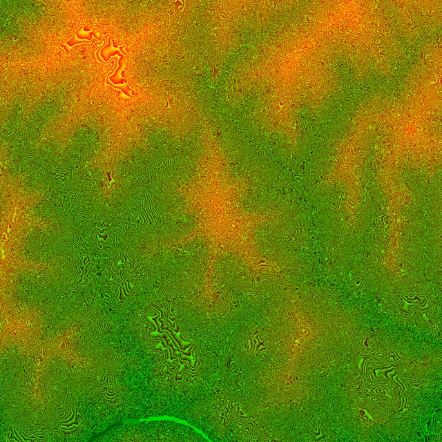
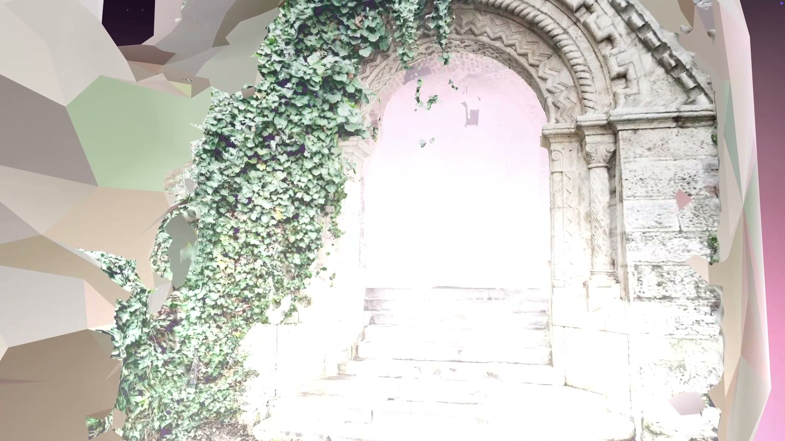
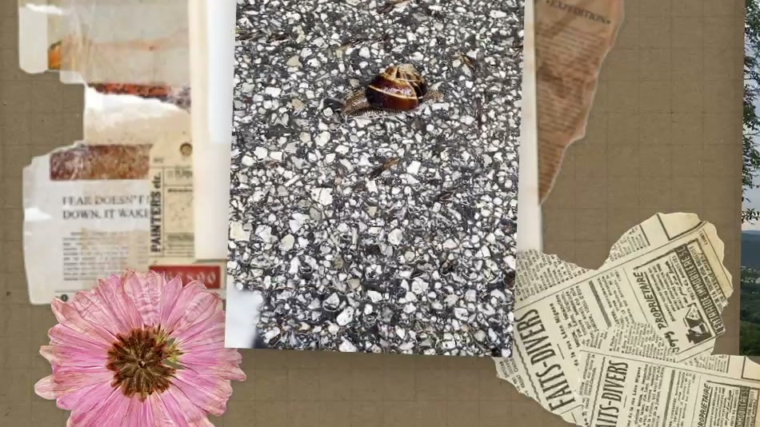
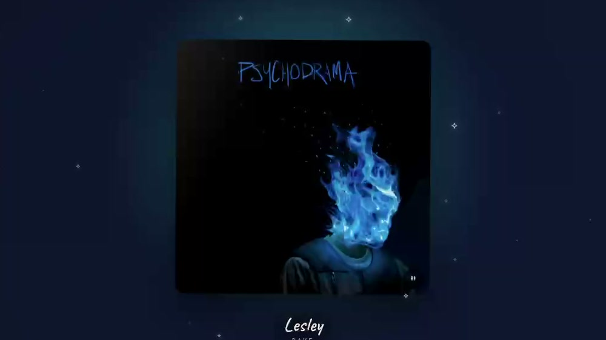
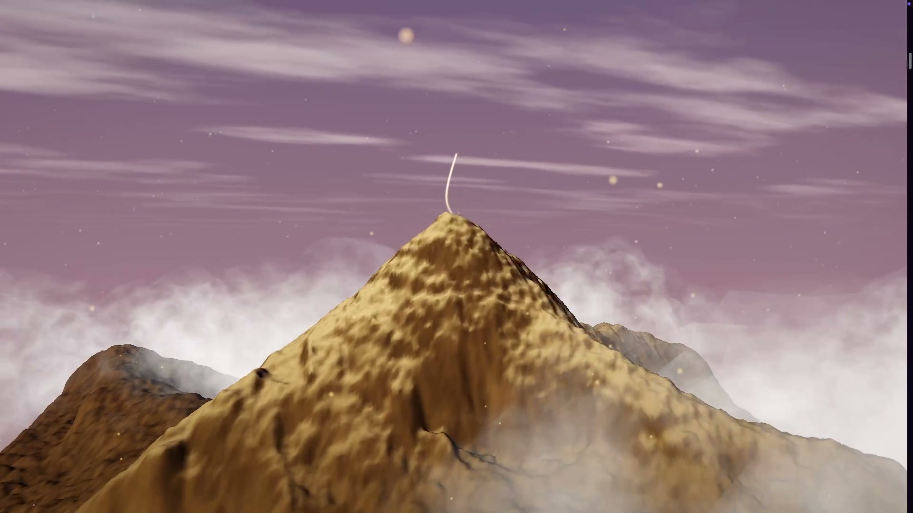
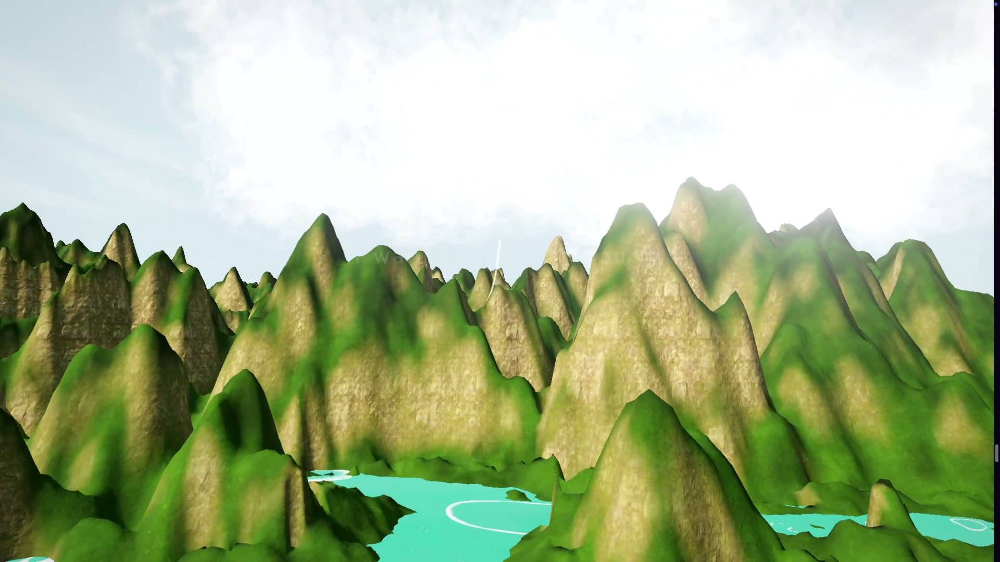
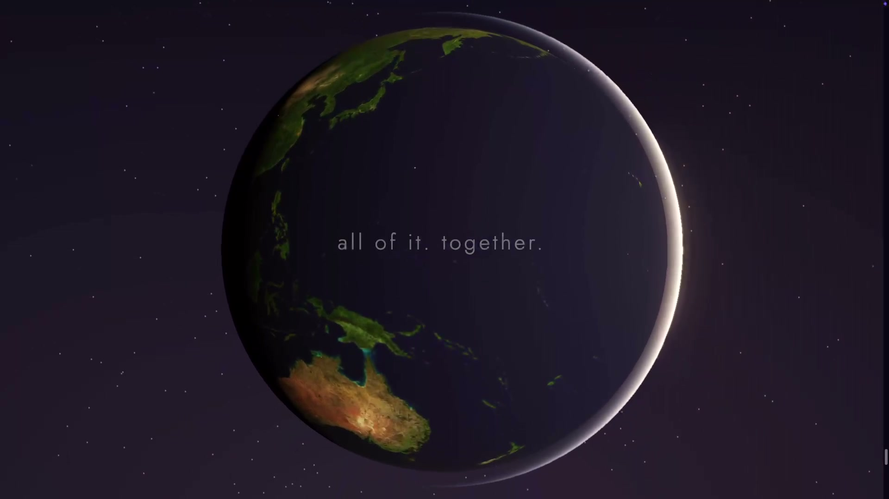
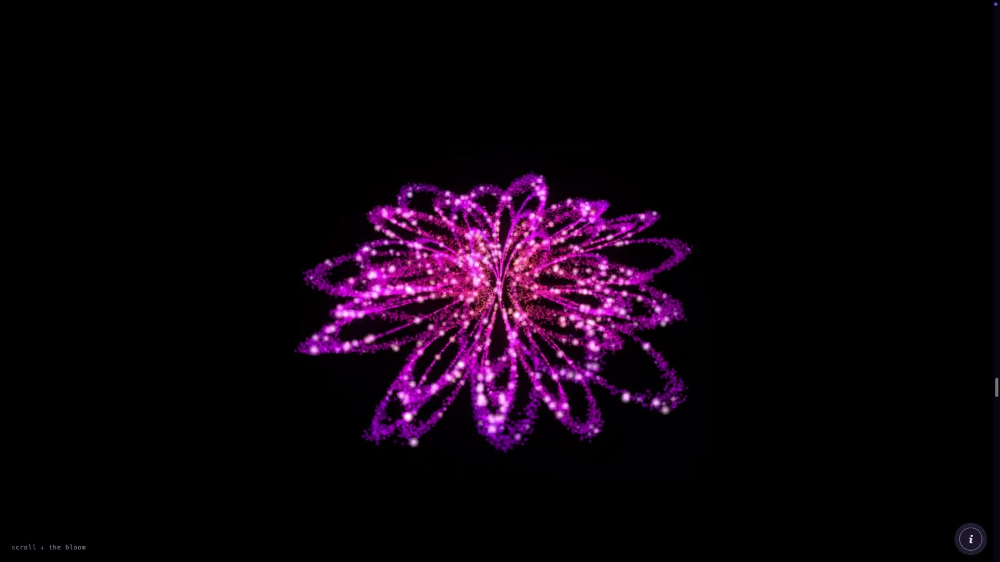
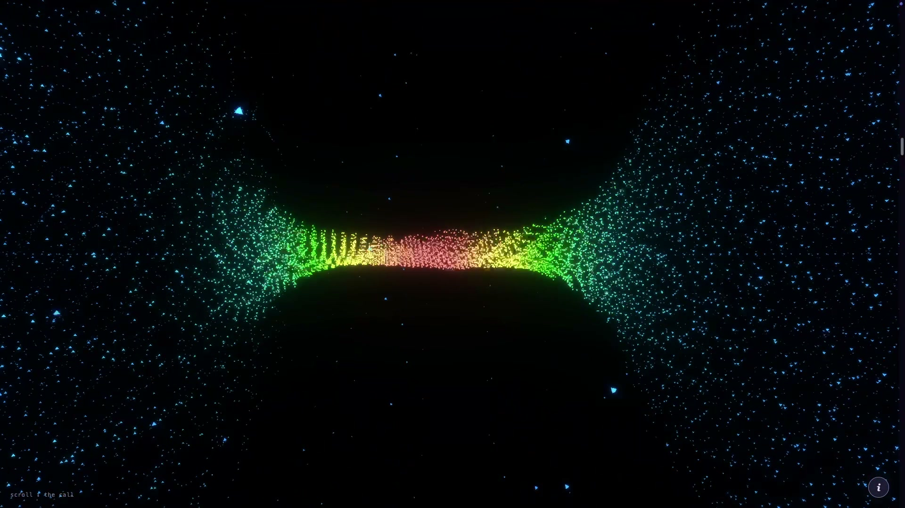

Heart
Eight full-screen acts, each its own real-time WebGL scene — procedural particle systems, custom shaders, film scenes, generated terrain — stitched into one continuous, transition-linked journey that holds up on a phone. The narrative is personal and stays offline; what’s shown here is the engineering.
Built on vanilla Three.js — deliberately not react-three-fiber — to keep hand-tuned shader and timing work off a reconciler. A central section sequencer mounts exactly one WebGL context at a time: each act owns its full lifecycle (context, rAF loop, listeners, audio, geometries, composer) and tears all of it down on unmount — verified zero leaked contexts across the whole run.
No two acts are built alike. A lyric-synced music act samples its palette from the cover art on screen; a scroll-driven interactive scrapbook composites layered paper, pressed flowers and taped polaroids; a particle field dollies into a DRACO-compressed GLTF landscape; five depth-map 2.5D parallax scenes each carry their own typographic identity; one config-driven engine generates every terrain scene from real DEM elevation tiles; and four particle acts share a single renderer.
Custom GLSL throughout: domain-warped fbm nebulae, HSL-in-shader particle coloring, Fresnel and flat-facet materials, particle-text formed from glyph silhouettes. GSAP + ScrollTrigger paces the run, and act transitions are synthesized live with the Web Audio API — no sound asset.
Favorite bug: dense additive-blend particles saturated to a pure-white blob.
The fix was systematic — cut density, raise the bloom threshold,
and clamp gl_PointSize,
since perspective point sizing balloons near-camera points into a solid mass.
Tuning was “measure, don’t eyeball”: k-means palettes from
reference photos, numeric color-grade checks, ffmpeg volumedetect for audio levels.

void main(){ vTw = pow(0.5+0.5*sin(uTime*uSpeed + aPhase), 3.0); vec3 p = position; p.y += sin(uTime*0.3 + aPhase)*6.0; vec4 mv = modelViewMatrix*vec4(p,1.0); gl_PointSize = aScl * uPix * (300.0/-mv.z) * (0.4+vTw); gl_Position = projectionMatrix*mv; }
Point size ∝ 1/−z is also what caused the additive-blend blowout — the fix included clamping it.







